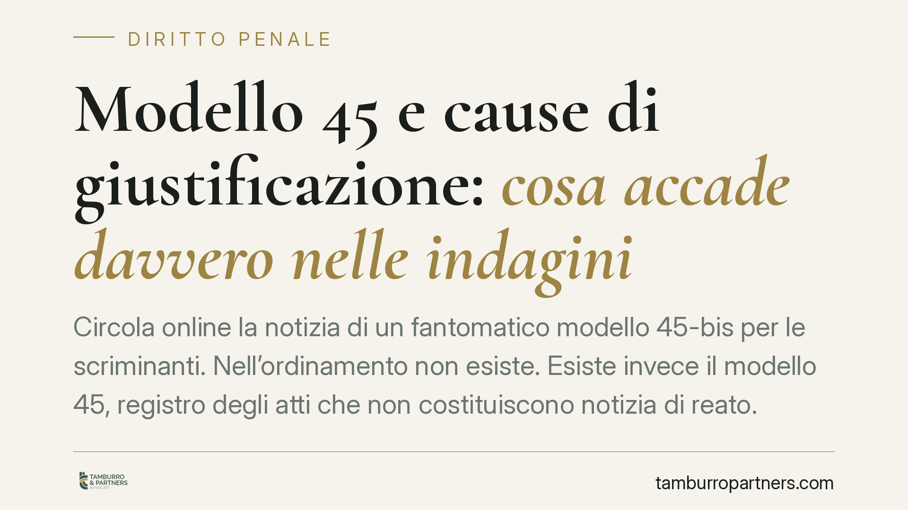

Modello 45 e cause di giustificazione: cosa accade davvero nelle indagini
Circola online la notizia di un fantomatico "modello 45-bis" per le scriminanti. Nell'ordinamento non esiste. Esiste invece il modello 45, registro degli atti che non costituiscono notizia di reato. Chiarire la differenza è essenziale per capire cosa succede, davvero, quando un fatto sembra coperto da una causa di giustificazione come la legittima difesa.

Una premessa necessaria
In rete è comparsa la descrizione di un "modello 45-bis", presentato come registro per i fatti coperti da cause di giustificazione, e collegato a un decreto legge del 2026 e a un inesistente art. 335-quinquies c.p.p.
È opportuno essere netti: queste norme non risultano vigenti né riscontrabili in Gazzetta Ufficiale o in Normattiva. Il codice di procedura penale, in materia di iscrizione della notizia di reato, si ferma agli articoli 335, 335-bis, 335-ter e 335-quater. Non esiste un 335-quinquies con quel contenuto.
Chiariamo allora come funziona l'istituto realmente esistente e vicino al tema: il modello 45.
Cos'è il modello 45 (quello vero)
Gli uffici di Procura registrano gli affari penali in diversi registri, indicati con numeri (i cosiddetti "modelli" del sistema Re.Ge.). I più noti:
- Modello 21: procedimenti contro persone note.
- Modello 44: procedimenti contro ignoti.
- Modello 45: registro degli atti che non costituiscono notizia di reato.
Il modello 45 raccoglie esposti, segnalazioni o atti che, come si presentano, non descrivono un fatto penalmente rilevante. L'iscrizione al 45 non apre un procedimento penale in senso proprio e non attribuisce la qualità di indagato.
È il modello 45 esistente, quindi, ad avere una funzione in parte affine a quella impropriamente attribuita al presunto "45-bis": distinguere ciò che è notizia di reato da ciò che non lo è.
L'iscrizione della notizia di reato: art. 335 c.p.p.
Quando invece emerge una notizia di reato, il pubblico ministero la iscrive nell'apposito registro ai sensi dell'art. 335 c.p.p., con il nome della persona a cui il reato è attribuito, non appena risultino elementi sufficienti a individuarla.
La riforma Cartabia (D.Lgs. 150/2022) ha rafforzato le garanzie sui tempi: l'art. 335-quater c.p.p. consente all'interessato di chiedere al giudice l'accertamento della tempestività dell'iscrizione, quando questa sia stata ritardata. È uno strumento a tutela di chi rischia di restare troppo a lungo in una posizione incerta.
E le cause di giustificazione?
Un fatto può integrare in astratto un reato ma essere lecito perché coperto da una causa di giustificazione (o scriminante): legittima difesa (art. 52 c.p.), stato di necessità (art. 54 c.p.), adempimento di un dovere o esercizio di un diritto (art. 51 c.p.), uso legittimo delle armi (art. 53 c.p.).
Nel sistema attuale non esiste un registro dedicato alle scriminanti. Se il fatto viene comunque segnalato — si pensi a chi reagisce a un'aggressione in casa — di regola il procedimento viene iscritto e la sussistenza della causa di giustificazione è valutata nel corso delle indagini. Può portare a una richiesta di archiviazione, ma non è automatica: va accertata sulla base delle prove.
Questo è il punto pratico più delicato. Chi ritiene di aver agito per legittima difesa non è, per ciò stesso, fuori dal procedimento: la sua posizione va costruita e documentata.
Cosa fare in concreto
- Nomina subito un difensore di fiducia. Anche prima di un formale avviso, l'assistenza tecnica è decisiva per impostare correttamente la difesa fin dal primo atto.
- Non rendere dichiarazioni senza il tuo avvocato. Quanto dici alle forze dell'ordine può pesare sull'intero procedimento; hai diritto a non rispondere.
- Documenta la dinamica dei fatti. Conserva referti medici, fotografie, messaggi, nomi di eventuali testimoni: la scriminante si prova, non si presume.
- Verifica la tua posizione nel procedimento. Puoi chiedere, tramite il difensore, informazioni sulle iscrizioni a tuo carico ex art. 335 c.p.p.
- Diffida delle scorciatoie normative. Prima di dare per acquisita una "nuova legge", consigliamo di far verificare la fonte: non tutto ciò che circola online è diritto vigente.
In sintesi
Il "modello 45-bis" delle scriminanti, allo stato, non esiste. Esistono il modello 45, l'iscrizione ex art. 335 c.p.p. e le regole del codice penale sulle cause di giustificazione. Su questi appigli reali si costruisce una difesa efficace.
Ogni condominio ha una storia a sé.
Se gestisci un'amministrazione e vuoi un confronto su una specifica questione condominiale, scrivi allo studio. Ti rispondiamo entro un giorno lavorativo.